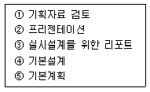
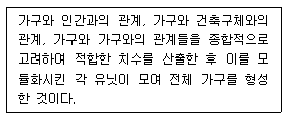
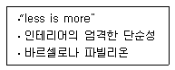
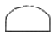
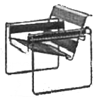
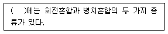
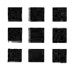
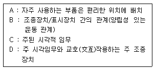

실내건축기사(구) (2010-05-09 기출문제)
1과목: 실내디자인론
1. 실내디자인 과정을 기획, 구상, 설계, 구현, 완공의 다섯단계로 구분할 경우, 문제에 대한 인식과 규명 및 정보의 조사, 분석, 종합을 하는 단계는?
- 기획
- 구상
- 설계
- 구현
(정답률: 99%)

2. 쇼룸의 실내계획에 대한 설명으로 옳지 않은 것은?
- 전시상품에 대한 정보를 알리거나 관람자를 안내하기 위한 서비스 공간이 필요하다.
- 입구에는 관람자의 시선을 끌기 위해 많은 양의 전시물과 세심한 디스플레이를 한다.
- 파사드는 실내에 대한 기대감과 기업 및 상품에 대한 첫인상을 좌우하는 곳이므로 강한 이미지를 줄 수 있도록 한다.
- 동선계획시 관람자가 한번 지났던 곳은 다시 지나지 않도록 한다.
(정답률: 75%)
3. 다음 중 눈부심이 일어나기 쉬우며 빛에 의한 그림자가 가장 강하게 나타나는 조명의 배광방식은?
- 직접조명
- 반간접조명
- 간접조명
- 전반확산조명
(정답률: 96%)
4. 디자인의 원리에 관한 설명으로 옳은 것은?
- 객관적이고 과학적인 판단만이 중요하다.
- 다수의 사람들에 의한 보편적 객관성을 따른다.
- 조형요소를 결합하여 착시현상을 유도하는 것이 대부분이다.
- 점, 선, 척도, 비례, 조형, 조화, 통일 등을 포함한다.
(정답률: 53%)
5. 실시 단계 이전의 과정에 속하는 작업의 범위가 다음과 같을 때, 그 순서가 옳게 된 것은?

- ① - ② - ③ - ④ - ⑤
- ① - ③ - ⑤ - ② - ④
- ① - ⑤ - ② - ④ - ③
- ① - ④ - ③ - ⑤ - ②
(정답률: 88%)
6. 디자인 요소 중 선에 대한 설명으로 옳지 않은 것은?
- 점이 이동한 궤적에 의한 선을 포지티브선(positive line), 면의 한계 또는 면들의 교차에 의한 선을 네거티브선(negative line)으로 구분하기도 한다.
- 수평선은 안전감과 안락함 등의 느낌을 준다.
- 사선은 엄숙, 의지, 상승 등의 느낌을 준다.
- 여러 개의 선을 이용하여 움직임, 속도감, 방향을 시각적으로 표현할 수 있다.
(정답률: 93%)
7. 주택 침실내의 침대 배치에 대한 설명 중 옳지 않은 것은?
- 침대의 머리부분(head)에 조명기구를 둘 경우 빛이 눈에 직접 들어오지 않도록 한다.
- 침대의 측면은 외벽에 붙이는 것이 이상적이다.
- 침대 하부(머리부분의 반대편)는 통행에 불편하지 않도록 90cm정도의 여유공간을 두는 것이 좋다.
- 침대 배치는 실의 크기와 침대와의 균형, 통로부분의 확보, 침재의 배치유형이 적절해야 한다.
(정답률: 91%)
8. 공간을 형성하는 부분(바닥, 벽, 천장)과 설치되는 가구, 기구들의 위치를 정하는 디자인 단계는?
- 공간설정의 단계
- 디자인 이미지의 구축단계
- 레이아웃(lay-out)단계
- 생활패턴의 파악단계
(정답률: 82%)
9. 실내디자인의 개념에 대한 설명 중 가장 부적당한 것은?
- 실내디자인은 건축과 인간의 관계를 이어주는 대화의 영역을 창출하는 작업이다.
- 실내디자인은 과학적 기술과 예술이 종합된 분야로서 주어진 공간을 목적에 맞게 창조하는 작업이다.
- 실내디자인은 심미적인 면만을 고려하여 실내에 질서와 새로운 에너지를 부여하는 창조행위이다.
- 실내디자인은 목적을 위한 행위이지만 그 자체가 목적이 아니고 특정한 효과를 얻기 위한 수단이다.
(정답률: 75%)
10. 상품의 유효진열 범위 내에서 고객의 시선이 가장편하게 머물고 손으로 잡기에도 가장 편안한 높이의 범위로 가장 알맞은 것은?
- 850~1250mm
- 450~850mm
- 1300~1500mm
- 1500~1700mm
(정답률: 89%)
11. 다음 설명에 알맞은 가구의 종류는?

- 시스템 가구
- 붙박이 가구
- 그리드 가구
- 수납용 가구
(정답률: 89%)
12. 전시공간의 실내계획에 관한 설명 중 옳지 않은 것은?
- 전시장 내의 자료 보존을 위하여 자료가 직사광선에 노출되지 않도록 한다.
- 전시장 바닥의 재료는 관람에 집중할 수 있도록 발소리가 나지 않는 재료를 사용한다.
- 천장면을 메취(mesh)나 루버식으로 처리하면 설비기기가 눈에 잘 띄이지 않아 시각적으로 편안하다.
- 전시장의 벽면은 예술적인 분위를 주기 위해 여러가지 색으로 화려하게 한다.
(정답률: 86%)
13. 다음 중 실내디자인의 개념과 가장 거리가 먼 것은?
- 순수예술
- 디자인 활동
- 실행과정
- 전문과정
(정답률: 89%)
14. 다음과 가장 관계가 깊은 사람은?

- 루이스 설리번
- 미스 반 데어 로에
- 르 꼬르뷔지에
- 프랭크 로이드 라이트
(정답률: 77%)
15. 다음의 천장의 단면 유형 중 단저(丹底)형에 해당하는 것은?

(정답률: 54%)
16. 디자인 프로세스 중 조건설정단계에서 가장 중요한 판단기준은?
- 기능성
- 조형성
- 경제성
- 심미성
(정답률: 72%)
17. 스케일의 상이성(相異性)에 대한 설명으로 가장 알맞은 것은?
- 인간이 작은 공간에서는 커보이고, 큰 공간에서는 작아보이는 현상이다.
- 유사한 배열을 구분해서 보려는 현상이다.
- 사물을 집합적으로 인식하는 현상이다.
- 대상을 가능한 한 간단한 구조로 보려고 하는 현상이다.
(정답률: 88%)
18. 디자인 요소 중 “패턴”에 대한 설명으로 옳지 않은 것은?
- 패턴은 인위적으로 구성되는 것도 있으나 어떤 단위화된 재료가 조합될 때 저절로 생기는 것이다.
- 인위적인 패턴의 구성은 반복을 명확히 함으로써만 이루어진다.
- 패턴을 취급할 때 중요한 것은 그 공간속에 있는 모든 패턴성을 갖는 것과의 조화방법이다.
- 연속성 있는 패턴은 리듬감이 생기는데 그 리듬이 공간의 성격이나 스케일과 맞도록 해야 한다.
(정답률: 88%)
19. 마르셀 브로이어가 바우하우스의 칸딘스키 연구실을 위해 디자인한 것으로 다음 그림과 같은 형태를 갖는 의자는?

- 바르셀로나 체어
- 바실리 체어
- 페이란 체어
- 바페트 체어
(정답률: 68%)
20. 공간의 분할 중 심리ㆍ도덕적 구획의 방법에 속하지 않는 것은?
- 커튼
- 바닥면의 변화
- 천장면의 변화
- 낮은 칸막이
(정답률: 69%)
2과목: 색채학
21. 다음 중 색상을 구별하는 망막의 시세포는?
- 추상체
- 간상체
- 홍채
- 수정체
(정답률: 81%)
22. 명소시에서 암소시로 이행할 때 붉은 색은 어둡게 되고 녹색과 청색은 상대적으로 밝게 보이는 현상은?
- 색순응 현상
- 오스트발트 현상
- 푸르킨예 현상
- 명암순응 현상
(정답률: 84%)
23. 적색에 백색의 색료를 혼합했을 때 채도의 변화는?
- 낮아진다.
- 혼합하기전과 같다.
- 높아진다.
- 조금 높아진다.
(정답률: 77%)
24. 우리가 영화 화면을 볼 때 규칙적으로 화면이 연결되어 언제나 지속되어 보이는 것과 관련이 있는 것은?
- 정의 잔상
- 부의 잔상
- 대비 효과
- 동화 효과
(정답률: 61%)
25. 색 지각을 일으키는 가장 기본적인 요건은?
- 물체
- 프리즘
- 빛
- 망막
(정답률: 89%)
26. ( ) 안에 알맞은 것은?

- 감산혼합
- 색료혼합
- 중간혼합
- 보색혼합
(정답률: 59%)
27. 상품의 색체에 대하여 고려해야할 사항으로 틀린 것은?
- 책상과 캐비넷의 회색 명도는 N5이하로 유지해야만 효율적이다.
- 색료를 선택할 때 내광, 내후성을 고려해야 한다.
- 재현성을 항상 염두에 두고 색체관리를 해야 한다.
- 제품의 표면이 클수록 더욱 정밀한 색채의 통제가 요구 된다.
(정답률: 63%)
28. 유리병 속의 액체나 얼음덩어리처럼 공간의 투명한 부피를 느끼는 색은?
- 투명면색
- 투과색
- 공간색
- 물체색
(정답률: 65%)
29. 톤(Tone)분류법의 특징에 대한 설명이 틀린 것은?
- 색채를 기억하기가 쉽다.
- 색채조화를 생각하기가 쉽다.
- 색상 차에 따른 분류를 세분한 것이다.
- 이미지 반영이 쉽다.
(정답률: 48%)
30. 오스트발트(Ostwald)표색계에 대한 설명 중 틀린 것은?
- 혼합하는 색량의 비율에 의하여 만들어진 체계이다.
- 빨강(R), 노랑(Y), 녹색(G), 파랑(B), 보라(P)의 5색을 같은 간격으로 배열하였다.
- 기본이 되는 색채는 완전색 C, 이상적 백색W, 이상적 흑색 B이다.
- 헤링(E. Hering)의 4원색 설을 기본으로 하였다.
(정답률: 43%)
31. 제품의 색채 계획에 있어서 가장 먼저 선택해야할 속성은?
- 색상
- 채도
- 명도
- 보색
(정답률: 90%)
32. 색입체에 관한 내용으로 틀린 것은?
- 색상, 명도, 채도를 3차원 공간에 배열한 것이다.
- Munsell의 색입체는 나무모양이다.
- Ostwald의 색입체는 삼각추체 모양이다.
- 명도순으로 된 무채색 축을 색입체의 중심에 두었다.
(정답률: 63%)
33. 주면의 색에 순도를 올리면 그대로 색상이 유지되지 않고 채도의 단계에 따라 색상이 달라져 보이는 현상은?
- 베졸트 브뤼케 현상
- 색음 현상
- 색각 항상 현상
- 에브니 효과 현상
(정답률: 34%)
34. 대비현상과는 달리 인접된 색과 닮아 보이는 현상은?
- 잔상현상
- 퇴색현상
- 동화현상
- 연상감정
(정답률: 85%)
35. 9개의 검정 정사각형 사이의 교차되는 흰 부분에 약간 희미한 접이 나타나 보이는 착각이 일어난다. 이와 같은 현상은?

- 한난대비
- 채도대비
- 계시대비
- 연변대비
(정답률: 66%)
36. 오스트발트의 조화론 중 등백계열 조화에 해당되는 것은?
- pa-la-ca
- pa-pg-pn
- ca-ga-ge
- gc-lg-pl
(정답률: 75%)
37. 어떤 색이 같은 색상의 선명한 색 위에 위치하면 원래의 색보다 훨씬 탁한 색으로 보이고 무채색 위에 위치하면 원래의 색보다 맑은 색으로 보이는 대비현상은?
- 명도대비
- 채도대비
- 색상대비
- 연변대비
(정답률: 74%)
38. 눈의 구조에 대한 설명으로 틀린 것은?
- 망막상에서 상의 초점이 맺히는 부분을 중심와라 한다.
- 망막의 맹점에는 광수용기가 없다.
- 눈에서 시신경 섬유가 나가는 부분을 유리체라 한다.
- 홍채는 눈으로 들어오는 빛의 양을 조절한다.
(정답률: 41%)
39. 다음 중 빨강의 먼셀 기호는?(KS표준 기준)
- 5RP 3.5/4.5
- 5R 8/4
- 5R 9/5
- 7.5R 4/14
(정답률: 70%)
40. 문스펜서 색채조화론에서 미도(美度)는 일반적으로 얼마 이상이면 그 배색이 좋다고 하는가?
- 0.9
- 0.7
- 0.5
- 0.3
(정답률: 55%)
3과목: 인간공학
41. 다음은 시각적 표시장치와 조종장치(control)를 포함하는 패널 설계시 고려되어야 할 내용으로 우선순위가 높은 것부터 낮은 순서대로 바르게 나열한 것은?

- C – A - B - D
- C – D – B - A
- A – C – D - B
- B – A – D – C
(정답률: 76%)
42. 귀를 크게 외이, 중이, 내이로 구분할 때 다음 중 중이에 속하는 것은?
- 고막
- 와우
- 정원창
- 귀지선
(정답률: 60%)
43. 신체부위의 유형에서 신체 부위 간의 각도가 감소하는 동작을 무엇이라 하는가?
- 굴곡(flexion)
- 신전(extention)
- 하향(pronation)
- 외전(adduction)
(정답률: 74%)
44. 다음 중 음의 단위가 아닌 것은?
- phon
- sone
- dB
- hue
(정답률: 83%)
45. 다음 중 영상표시단말기(VDT)를 취급하는 근로자에게 제공할 키보드의 경사로 가장 적합한 각도는?
- 5~15°
- 5~25°
- 10~35°
- 10~45°
(정답률: 74%)
46. 작업으로 인한 근육에 필요한 산소는 순환기계통을 통해 혈액으로 배달된다. 다음 중 순환기 반응으로만 나열된 것은?
- 심박출량 증가, 산소부재, 혈압상승
- 혈압상승, 혈류의 재분배, 흡기량 증가
- 혈압상성, 심박출량 증가, 흡기량 증가
- 심박출량 증가, 혈압상승, 혈류의 재분배
(정답률: 55%)
47. 다음 중 소요조명을 구하는 식으로 옳은 것은?
- 소요광속발산도(f/L)/반사율(%)
- 조도(lux)/반사율(%)
- 조도×면적/반사율(%)
- 면적×감광보상률/반사율(%)
(정답률: 57%)
48. 어떤 물체나 표면에 도달하는 빛의 밀도를 무엇이라 하는가?
- 조도
- 반사율
- 휘도
- 대비
(정답률: 71%)
49. 다음 중 인간을 정보처리 시스템으로 볼 때 정보 처리 속도가 가장 느린 것은?
- 감각기관
- 신경전달기관
- 뇌의 판단기관
- 뇌의 저장기관
(정답률: 74%)
50. 다음 중 부품배치의 원칙에 해당되지 않는 것은?
- 중요성의 원칙
- 사용 빈도의 원칙
- 기능별 배치의 원칙
- 작업 선정의 원칙
(정답률: 76%)
51. 다음 중 소음을 통제하는 방법으로 적절하지 않은 것은?
- 소음원을 격리시킨다.
- 귀마개를 착용한다.
- 소음원의 설비를 적절하게 배치한다.
- 훈련을 통하여 적응력을 향상시킨다.
(정답률: 72%)
52. 다음 중 시각적 표시장치의 지침 설계를 원칙으로 적절하지 않은 것은?
- 뾰족한 지침을 사용할 것
- 지침을 눈금면과 밀착시킬 것
- 지침의 색은 선단에서 눈금의 중심까지 칠할 것
- 지침의 끝은 작은 눈금과 겹치도록 할 것
(정답률: 66%)
53. 다음 중 피부감각 기능이 아닌 것은?
- 온도를 지각한다.
- 모양을 지각한다.
- 위치를 지각한다.
- 평형을 유지한다.
(정답률: 49%)
54. 다음 중 눈에 관한 설명으로 틀린 것은?
- 동공 : 눈에 들어오는 광선의 양을 조절한다.
- 안근 : 보려고 하는 대상 쪽으로 눈을 돌려주는 작용을 한다.
- 수정체 : 상의 초점을 맞추며, 먼 곳을 볼 때는 두꺼워 지고 가까운 곳을 볼 때는 얇아진다.
- 망막 : 대상물에서 오는 빛을 받으며, 이 빛은 수정체에서 굴절되어 상하가 거꾸로 된 상을 비춘다.
(정답률: 66%)
55. 실현가능성이 동일한 4개의 대안이 있을 경우 총정보량 몇 bit인가?
- 0.5
- 1
- 2
- 4
(정답률: 62%)
56. 다음 중 EMG(electromyography)를 이용하여 측정하는 것은?
- 심장 박동수
- 뇌의 활동량
- 안구의 초점이동
- 근육의 활동
(정답률: 63%)
57. 조명방법 중 간접조명에 관한 설명으로 옳은 것은?
- 작업상 필요한 장소만 조명하는 방법이다.
- 효율이 좋으나 음영이 생기기 쉽다.
- 광원을 천장에 매달기 때문에 파손의 위험이 적으나, 전력소비량이 많다.
- 광이 천장면이나 벽면에 부딪친 다음 반사된 광선이 조명면에 비치는 방법이다.
(정답률: 86%)
58. 다음 중 행동과정을 통한 인간실수의 분류로 적합하지 않은 것은?
- input Error
- Omission Error
- Feed Back Error
- inform ation processing Error
(정답률: 62%)
59. 자료의 통계분석에서 상관관계가 전혀 없음을 나타내는 상관계수(coefficient of correlation)는 얼마인가?
- -0.1
- 0
- 0.5
- +1.0
(정답률: 77%)
60. 다음 중 신경세포의 구성요소가 아닌 것은?
- 핵
- 수의근
- 수상돌기
- 신경섬유
(정답률: 78%)
4과목: 건축재료
61. 다음 중 강(鋼)의 열처리와 관계없는 용어는?
- 단조
- 불림
- 담금질
- 뜨임질
(정답률: 61%)
62. 내열성은 높지 않으나 우수한 단열성 때문에 냉동기기에 많이 사용되는 단열재는?
- 우레아폼
- 폴리우레탄폼
- 스티로폴
- 퍼라이트
(정답률: 62%)
63. 다음 중 래커(lacquire)에 대한 설명으로 옳지 않은 것은?
- 도막형성은 주로 용제의 증발에 따른 건조에 의한다.
- 도막이 단단하지 않으며 에나멜 도막은 내후성이 나쁘다.
- 건조시간을 지연시킬 목적으로 신너(thinner)를 첨가하는 경우도 있다.
- 안료는 배합하지 않은 것은 클리어래커라 한다.
(정답률: 60%)
64. 미장용 혼화재료 중 착색을 목적으로 하는 착색재에 속하지 않는 것은?
- 합성산화철
- 카본블랙
- 염화칼슘
- 이산화망간
(정답률: 71%)
65. 플라이애시(fly ash)에 대한 설명 중 옳지 않은 것은?
- 콘크리트의 워커빌리티가 좋아지고 재료 분리가 감소된다.
- 콘크리트의 장기강도가 증가한다.
- 콘크리트의 수화열이 증가한다.
- 콘크리트의 수밀성이 향상된다.
(정답률: 59%)
66. 다음 중 강(鋼)의 일반적 성질에 대한 설명으로 옳지 않은 것은?
- 탄소 함유량이 증가함에 따라 열전도율은 떨어진다.
- 탄소 함유량이 증가함에 따라 비열은 커진다.
- 융점은 대략 1,425~1,528℃ 이다.
- 항복비란 상위 항복점과 하위항복점의 비를 말한다.
(정답률: 43%)
67. 다음 미장재료 중 건조시 무수축성의 성질을 가진 재료는?
- 시멘트 모르타르
- 돌로마이트 플라스터
- 회반죽
- 석고플라스터
(정답률: 52%)
68. 도료의 저장 중 온도의 상승 및 저하의 반복작용에 의해 도료 내에 작은 결정이 무수히 발생하며 도장시 도막에 좁쌀 모양이 생기는 현상은?
- skinning
- seeding
- bodying
- sagging
(정답률: 81%)
69. 아스팔트방수에서 아스팔트 방수층과 콘크리트 바탕과의 접착을 좋게 하기 위하여 바르는 재료는?
- 스트레이트 아스팔트
- 블로운 아스팔트
- 아스팔트 프라이머
- 아스팔트 컴파운드
(정답률: 74%)
70. 콘크리트에 금속, 유리, 합성수지 등의 단섬유(短纖維)가 혼입 보강되면 주로 어느 성질이 향상되는가?
- 인성 및 내충격성
- 흡음성 및 차음성
- 압축강도
- 방수성 및 내열성
(정답률: 68%)
71. 다음 시멘트 중 가장 응결이 빠른 시멘트는?
- 고로시멘트
- 알루미나 시멘트
- 실리카 시멘트
- 중용열 포틀랜드시멘트
(정답률: 24%)
72. 트래버튼(travertin)에 대한 설명으로 옳지 않은 것은?
- 석질이 불균일하고 다공질이다.
- 특수 외장용 장식재로서 주로 사용된다.
- 변성암으로 황갈색의 반문이 있다.
- 탄산석회를 포함한 물에서 침전, 생성된 것이다.
(정답률: 32%)
73. 합성수지와 체질안료를 혼합한 입체무늬 모양을 내는 뿜칠용 도료로 콘크리트 및 모르타르 바탕에 도장하는 도료는?
- 본타일
- 다채무늬 도료
- 규산염 도료
- 알루미늄 도료
(정답률: 46%)
74. 다음 중 아스팔트 루핑의 생산에 사용되는 아스팔트는?
- 록 아스팔트
- 유제 아스팔트
- 컷백 아스팔트
- 블로운 아스팔트
(정답률: 74%)
75. 톱밥을 압축 가공하여 만드는 인조 목재판인MDF(Medium Density Board)의 장점이 아닌 것은?
- 천연목재보다 강도가 크고 변형이 적다.
- 재질이 천연목재보다 균일하다.
- 천연목재에 비해 습기에 강하다.
- 다양한 형태의 시공이 용이하다.
(정답률: 68%)
76. 다음 중 회반죽 바름용 재료와 관련 없는 것은?
- 종석
- 해초풀
- 여물
- 소석회
(정답률: 54%)
77. 실리콘(silicon)수지에 대한 설명 중 옳지 않은 것은?
- 탄력성, 내수성 등이 아주 우수하기 때문에 접착제, 도료로서 주로 사용된다.
- 70℃~80℃의 고온에서는 연화되는 단점이 있다.
- 가소물이나 금속을 성형할 때 이형제로 쓸 수 있을정도로 피복력이 있다.
- 발수성이 있기 때문에 건축물, 전기 절연물 등의 방수에 쓰인다.
(정답률: 61%)
78. 목재의 방부제 중 독성이 적고 자극적인 냄새가 나며, 처리재는 갈색으로 가격이 저렴하여 많이 사용되는 것은?
- 크레오소트유(Creosote Oil)
- 페놀류⋅무기플루오르화물계(PF)
- 크롬⋅구리⋅비소화합물계(CCA)
- 펜타클로르페놀(PCP)
(정답률: 73%)
79. 콘크리트 건조수축에 대한 설명 중 옳지 않은 것은?
- 골재로서 사암이나 점판암을 이용한 콘크리트 수축량이 크고, 석영⋅석회암⋅화강암을 이용한 것은 적다.
- 콘크리트 습윤양생기간의 장단은 건조수축에 그다지 큰 영향을 주지 않는다.
- 골재 중에 포함된 미립분이나 점토, 실트는 일반적으로 건조수축을 증대시킨다.
- 단위수량이 증가되면 수축량은 감소한다.
(정답률: 40%)
80. 금속제품에 관한 설명 중 옳지 않은 것은?
- 스테인리스 강판은 내식성 및 내마모성이 우수하고강도가 높을 뿐만 아니라 장식적으로도 광택이 미려하다.
- 메탈폼은 금속재의 콘크리트용 거푸집으로서 치장 콘크리트 등에 사용된다.
- 조이너는 벽, 기둥 등의 모서리 부분에 미장바름을 보호하기 위하여 묻어 붙인 것으로 모서시쇠라고도 한다.
- 꺽쇠는 강봉 토막의 양끝을 뾰족하게 하고, ㄷ자형으로 구부려 2개의 부재를 잇거나 엇갈리게 고정시킬때 사용된다.
(정답률: 65%)
5과목: 건축일반
81. 다음 중 비상경보설비를 설치하여야 할 특정소방 대상물로 옳지 않은 것은?
- 무창층 –바닥면적 150m2이상
- 지하층 –바닥면적 150m2이상
- 옥내작업방 –작업하는 근로자수가 50인 이상
- 지하가 중 터널 –길이 300m이상
(정답률: 62%)
82. 고대 그리스 건축에 대한 설명 중 옳지 않은 것은?
- 컴퍼지트 오더(Composite Order)가 주로 사용되었다.
- 그리스 신전 건축은 본질적으로 기둥과 보로 구성되는 가구식구조이다.
- 신전건축기 절정을 이루었으며 조화와 균형에 중점을 두었다.
- 파르테논신전에서는 착시현상을 교정하기 위해 기둥에 배흘림(entasis)이 사용되었다.
(정답률: 52%)
83. 철골구조의 고력볼트접합에 관한 설명 중 옳지 않은 것은?
- 접합부의 강성이 높아서 접합부의 변형이 거의 없다.
- 볼트에서는 마찰접합의 경우 전단력이 생기지 않는다.
- 계기공구를 사용하여 죄므로 정확한 강도를 얻을수 있다.
- 피로강도가 높아 볼트가 풀리기 쉽다.
(정답률: 62%)
84. 스페이스 프레임(space frame) 구조에 대한 설명 중 옳지 않은 것은?
- 동일 부재를 반복, 조립하므로 작업이 용이하다.
- 넓은 공간을 구성하는데 적절하다.
- 철판 및 곡면구조로 응용할 수 없어 공간의 표현이 자율적이지 못하다.
- 재료는 주로 강관(steel pipe)을 사용한다.
(정답률: 41%)
85. 다음 중 고대 로마의 바실리카에 대한 설명으로 옳지 않은 것은?
- 집회 및 상업거래 등을 위하여 계획된 건물이다.
- 로마시대 이후에는 교회건축의 모체가 된다.
- 바실리카 울피아의 출입구는 커다란 중정에 면한 장변쪽에 나있다.
- 바실리카 울피아는 동적이고 인간적 척도로 된 내부공간을 갖는다.
(정답률: 31%)
86. 벽돌쌓기에서 각 켜를 쌓는데 벽 입면(立面)으로 보아 길이와 마구리가 한켜에서 번갈아 나타나는 것은?
- 영식쌓기
- 네덜란드식쌓기
- 불식쌓기
- 미식쌓기
(정답률: 33%)
87. 다음 중 플라잉 버트레스(flying buttress)와 가장 관계가 깊은 양식은?
- 로마네스크(Romanesque)양식
- 로마(Rome)양식
- 르네상스(Renaissance)양식
- 고딕(Gothic)양식
(정답률: 77%)
88. 석재의 가공 중 표면의 질감(texture)이 가장 거친 마감 상태는?
- 잔다듬 후
- 혹따기 후
- 도드락다듬 후
- 물갈기 후
(정답률: 66%)
89. 철근콘크리트 압축부재에 사용되는 띠철근에 대한 규정으로 옳지 않은 것은?
- D35 이상의 종방향 철근과 다발철근 D13이상의 띠철근으로 둘러싸야 한다.
- D32 이하의 종방향 철근은 D10이상의 띠철근으로 둘러싸야 한다.
- 띠철근의 수직간격은 종방향 철근지름의 16배 이상으로 하여야 한다.
- D35 이상의 종방향 철근을 둘러싸는 띠철근 대신 등가단 면적의 이형철선 또는 용접철망을 사용할 수있다.
(정답률: 50%)
90. 에너지 절약계획서를 제출하여야 하는 대상 건축물 기준 내용으로 옳지 않은 것은?(단, 당해 용도에 사용되는 바닥면적의 합계 기준)
- 수련시설 중 유스호스텔 : 2,000m2이상
- 교육연구시설 중 연구소 : 2,000m2이상
- 제1종 근린생활시설 중 목욕장 : 500m2이상
- 숙박시설 : 2,000m2이상
(정답률: 42%)
91. 건축물을 건축하는 경우 열손실 방지 등의 에너지 이용합리화를 위한 조치를 하여야 하는 건축물의 부위를 열거한 것 중에서 가장 거리가 먼 것은?
- 거실의 외벽
- 최하층에 있는 거실의 바닥
- 최상층에 있는 거실의 반자
- 공동주택의 세대간의 경계벽
(정답률: 55%)
92. 목재 접합에 대한 다음 설명 중 옳은 것은?
- 이음 : 좁은 폭의 널을 옆으로 붙여 그 폭을 넓게 하는 것
- 쪽매 : 두 재를 직각 또는 경사지게 접합하는 것
- 맞춤 : 두 재를 맞대고 같은 재로 나비형의 은장을 만들어 끼운 접합
- 연귀 : 직교되거나 경사로 교차되는 부재의 마구리가 보이지 않게 빗잘라대는 것
(정답률: 40%)
93. 장식적이고 곡선을 주로 사용하며 나무, 꽃, 덩굴, 조개껍질, 뱀과 같은 자연적인 소재를 중심으로 표현한 디자인 사조는?
- 세제션
- 아르누보
- 데 스틸
- 절충주의
(정답률: 87%)
94. 특정소방대상물 중 교육연구시설에 해당하는 것은?
- 무도학원
- 자동차정비학원
- 자동차운전학원
- 연수원
(정답률: 74%)
95. 다음 중 벽에 대한 내화구조 기준으로 옳지 않은 것은?
- 철근콘크리트조로서 벽의 두께가 10cm이상인 것
- 철골철근콘크리트조로서 벽의 두께가 10cm이상인것
- 벽돌조로서 벽의 두께가 15cm이상인 것
- 고온⋅고압의 증기로 양생된 경량기포콘크리트패널로서 두께가 10cm이상인 것
(정답률: 71%)
96. 아라베스크(Arabesque)장식문양과 거리가 먼 내용은?
- 식물의 잎, 꽃, 열매 등이 우아한 곡선으로 연결된 장식문양
- 이슬람건축이나 공예품의 특징인 환상적인 분위기를 형성하는 장식요소
- 괴기스러울 정도로 복잡하게 조립한 부자연스러운장식요소
- 아라비아 풍의 장식요소
(정답률: 45%)
97. 방화구획이 설치된 건축물에서 배연설비 설치에 대한 설명으로 옳지 않은 것은?
- 방화구획마다 1개소 이상 배연창을 설치한다.
- 배연구는 연기감지기 또는 열감지기에 의하여 자동으로 열수 있는 구조로 하되, 손으로 개폐가 되지 않도록 한다.
- 배연구는 예비전원으로 열 수 있도록 한다.
- 반자높이가 바닥으로부터 3미터이상인 경우에는 배연창의 하변이 바닥으로부터 2.1미터이상의 위치에 놓이도록 설치한다.
(정답률: 72%)
98. 목재의 방화성능을 향상시키기 위한 방안으로 옳지 않을 것은?
- 목부의 노출을 적게 한다.
- 인산암모늄(방연제)을 도포한다.
- 목조건물의 효율적인 배연을 위하여 환기구를 크게 한다.
- 표면에 시멘트 모르타르를 바른다.
(정답률: 63%)
99. 철근콘크리트 보에 관한 설명으로 옳지 않은 것은?
- 인장측에만 철근을 넣은 보를 단근보라 한다.
- 압축측에서도 철근을 배근한 보를 복근보라 한다.
- 단순보에 작용하는 전단력은 주앙부에서 양단부로 갈수록 크다.
- 내민보는 단면 하부에 인장근을 배근한다.
(정답률: 26%)
100. 건축물에 설치하는 회전물의 설치기준에 대한 설명으로 옳지 않은 것은?
- 회전문의 위치는 계단이나 에스컬레이터로부터 2m이상 거리를 둘 것
- 회전문의 회전속도는 분당회전수라 8회를 넘지 아니하도록 할 것
- 회전문고 문틀사이는 5cm이상 간격을 확보하고 틈사이를 고무와 고무펠트의 조합체 등을 사용하여 신체나 물건 등에 손상이 없도록 할 것
- 회전문은 상요에 편리하게 양 방향으로서 회전할수 있는 구조로 할 것
(정답률: 72%)
6과목: 건축환경
101. 다음 중 단열이 메카니즘에 해당하지 않는 것은?
- 용량형 단열
- 반사형 단열
- 저항형 단열
- 투과형 단열
(정답률: 43%)
102. 다음의 눈부심(glare)에 대한 설명 중 옳지 않은 것은?
- 눈에 입사하는 광속이 과다할수록 눈부시다.
- 광원의 휘도가 높을수록 눈부시다.
- 광원이 시선에 가까울수록 눈부시다.
- 빛나는 면의 크기가 작을수록 눈부시다.
(정답률: 76%)
103. 열에 의하여 쾌적감이나 불쾌감을 느끼는 물리적 온열 4요소가 옳게 나열된 것은?
- 기온, 기류, 습도, 복사열
- 기옥, 기류, 복사열, 착의량
- 기온, 복사열, 습도, 활동량
- 기온, 기류, 습도, 활동량
(정답률: 54%)
104. 급수설비의 고가수조식에 관한 설명으로 맞는 것은?
- 수질오염의 염려가 적다.
- 일정한 수압을 유지할 수 없다.
- 대규모 급수시설에 적합하다.
- 설비비가 저렴하다.
(정답률: 52%)
1⑤. 다음 중 차음재료에 요구되는 성질과 가장 거리가 먼 것은?
- 공구 중을 전파하는 음파의 차단에 관하여 특질을 갖추고 있다.
- 실용적으로 사용하기 편리한 재료이고, 차음의 목적에 따라 천장, 벽, 바닥 등이 구성재료가 될 수 있다.
- 연속기포 다공질 재료로서 공기 중을 전파하여 입사한 음파가 투과가 용이하다.
- 공기의 유통이 없이 비교적 밀실한 재질을 지니고 있다.
(정답률: 66%)
106. 음파는 파동의 하나이기 때문에 물체가 진행방향을 가로막고 있다고 해도 그 물체의 후면에도 전달된다. 이러한 현상을 무엇이라 하는가?
- 잔향
- 굴절
- 회절
- 간섭
(정답률: 76%)
107. 급수방식 중 수도직결방식에 대한 설명으로 옳지 않은 것은?
- 위생성 측면에서 바람직한 방식이다.
- 급수압력이 항상 일정하다.
- 정전으로 인한 단수의 염려가 없다.
- 고층으로의 급수가 어렵다.
(정답률: 57%)
108. 옥내조명의 설계순서에서 가장 우선적으로 이루어져야 할 사항은?
- 조명방식의 결정
- 광원의 선정
- 소요조도의 결정
- 조명기구의 결정
(정답률: 76%)
109. 다음 중 실내압력을 필요에 따라 인위적으로 조절할 수 있는 환기방식은?
- 압입흡출 병용방식
- 압입방식
- 흡출방식
- 자연환기방식
(정답률: 50%)
110. 일사, 일조 조정을 위해 수평루버보다 수직루버의 설치가 더 효과적인 방위로만 연결된 것은?
- 동면과 서면
- 남면과 북면
- 동면과 북면
- 서면과 남면
(정답률: 47%)
111. 공기 조화방식 중 전공기 방식에 대한 설명으로 옳지 않은 것은?
- 중간이게 외기냉방이 가능하다.
- 실내에 배관으로 인한 누수의 염려가 없다.
- 덕트 스페이스가 필요 없다.
- 실내유효 스페이스를 넓힐 수 있다.
(정답률: 66%)
112. 마스킹(masking)효과에 대한 설명으로 옳은 것은?
- 음파가 어떤 매질을 진행할 때 다른 매질의 경계면에 도달하여 진행방향이 변하는 현상
- 초기 반사음보다 늦게 도래하는 반사음의 효과
- 어떤 음의 방해로 인하여 다른 음에 대한 가청 임계값이 증가하는 현상
- 입사음의 진동수가 벽의 진동수와 일치되어 같은 소리를 내는 현상
(정답률: 50%)
113. 다음 중 습공기선도에 표현되어 있지 않는 것은?
- 산소함유량
- 습구온도
- 엔탈피
- 노점온도
(정답률: 65%)
114. 음의 크기 레벨 산정에 기준이 되는 순음의 주파수는?
- 10Hz
- 100Hz
- 500Hz
- 1000Hz
(정답률: 55%)
115. 다음의 복사에 의한 전열에 관한 설명 중 옳지 않은 것은?
- 일반적으로 흡수율이 작은 표면은 복사율도 작다.
- 물체에서 복사되는 열량은 그 표면의 절대온도의 4승에 비례한다.
- 물질의 표면에 복사열 에너지가 닿으면 그 일부는 물질 내부에 흡수되고 일부는 반사되고, 나머지는 투과된다.
- 알루미늄박과 같은 금속의 연마면은 복사율이 1정도로 매우 크므로 복사에 의한 열의 이동을 방지하기 위하여 표면에 사용된다.
(정답률: 52%)
116. 다음 중 접착제, 가구, 건자재에 주로 발생되는 실내 공기오염물질은?
- 이산화질소
- 라돈
- 포름알데히드
- 중금속
(정답률: 52%)
117. 잔향시간에 대한 설명 중 옳지 않은 것은?
- 잔향시간이 너무 길면 음의 명료도가 저하된다.
- 실내의 잔향음의 대소를 평가하는 지표이다.
- 잔향시간은 실내가 확산음장이라고 가정하여 구해진 개념이다.
- 음악감상을 주로 하는 실은 대화를 주로 하는 실보다 짧은 잔향시간이 요구된다.
(정답률: 72%)
118. 다음과 같이 구서오딘 구조체에서 1m2당 관류열량은? (단, 실내온도 25℃, 외기온도10℃, 내표면 전달률8W/m2⋅K임)
- 15.66W
- 21.36W
- 25.36W
- 37.13W
(정답률: 29%)
119. 지우게 도달하는 자외선 가운데 인간의 건강과 깊은 관계가 있으며 건강선이라고도 불리우는 것은?
- X선
- 가시광선
- 감마선
- 도르노선
(정답률: 51%)
120. 외단열과 내단열공법에 대한 설명 중 옳지 않은 것은?
- 내단열은 외단열에 비해 실온변동이 작다.
- 외단열로 하면 건물의 열교현상을 방지할 수 있다.
- 내단열로 하면 내부결로의 발생 위험이 크다.
- 단시간 간헐난방을 하는 공간은 외단열보다는 내단 열이 유리한다.
(정답률: 46%)